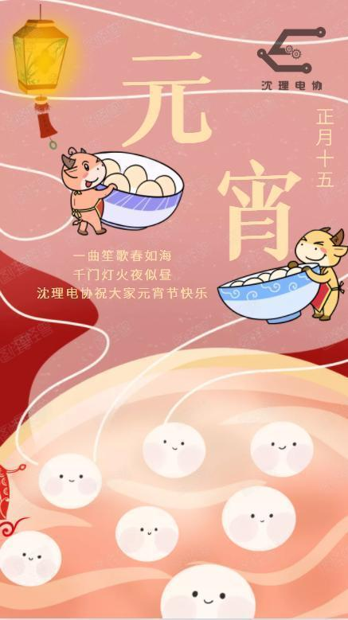
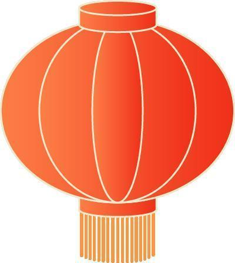

“今年元夜时，月与灯依旧。”

正月十五夜
——苏味道
火树银花合，星桥铁锁开。
暗尘随马去，明月逐人来。
游伎皆秾李，行歌尽落梅。
金吾不禁夜，玉漏莫相催。


元宵节的由来我们早已知道了，有没有什么有意思的民间传说呢？
当然有了！其实元宵节的形成有一个较长的过程，民间也流传着不少关于元宵节的故事，相传刘邦死后，刘盈登基为汉惠帝。但刘盈生性懦弱，大权渐渐落在吕后手中。刘盈病死后，吕后独揽朝政，刘氏宗室因惧怕吕后的残暴，敢怒不敢言。吕后病死后，诸吕密谋夺取刘氏江山。此事被刘氏宗室齐王刘襄知道后，刘襄决定起兵讨伐诸吕。平乱之后，刘邦的第二个儿子刘恒登基，下令把平息“诸吕之乱”的正月十五，定为与民同乐日。从此，正月十五便成了一个普天同庆的民间节日——“闹元宵”。

真是又“涨”知识了呢！下面就到了每年元宵节必不可少的环节了，那就是——猜 灯 谜！



你出的题也太简单了，怎么能难到聪明机智的我呢！

哈哈哈，那好吧，这次给你来个难的——自制孔明灯。怎么样？这个不会了吧？
这个确实难倒我了，那就别说了，赶紧"上菜"吧


滑动查看更多


学“废”了吗？
脑子：“我会了”，手：“不一定”，但没关系，什么事只要持之以恒，终会越过去的。希望屏幕前的你也多动手试一试哦！最后祝大家元宵快乐！！！

END
排版|孙瑛桀